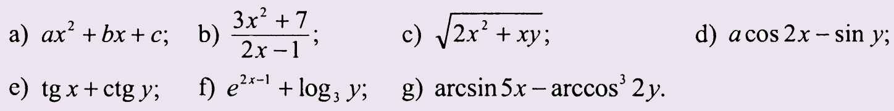
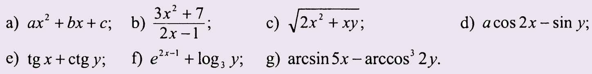

Expresii
Expresia reprezintă o formulă pentru calculul unei valori. Reaminim că putem întâlni valorile de diferite
tipuri și ca rezultat putem deosebi diferite tipuri de expresii. Tipul expresiei derivă de tipul
valorii rezultante sau pur și simplu de rezultatul expresiei. Cel mai des putem întâlni următoarele tipuri de
expresii: expresii aritmetice, expresii logice. Structura unei expresii este alcătuită din mai
multe elemente printre care sunt: factor, termen și expresie simplă.
Factorul poate fi o mărime fie constantă, fie variabilă, apelul unei funcții din biblioteca cmath sau negația unui factor.
Dacă factorii sunt uniți cu ajutorul unor operatori multiplicativi (&&, *, /, %) se obține un termen.
Dacă termenii sunt uniți cu ajutorul unor operatori aditivi (||, +, -) se obține o expresie simplă.
Dacă unim expresii simple cu ajutorul unor operatori relaționali (<, >, ==, <=, >=, !=) obținem o expresie.
În expresie putem întâlni mai mulți operatori deaceea trebuie să cunoaștem că ordinea efectuării operațiilor este dirijată de prioritatea operatorilor.
Factorul poate fi o mărime fie constantă, fie variabilă, apelul unei funcții din biblioteca cmath sau negația unui factor.
Dacă factorii sunt uniți cu ajutorul unor operatori multiplicativi (&&, *, /, %) se obține un termen.
Dacă termenii sunt uniți cu ajutorul unor operatori aditivi (||, +, -) se obține o expresie simplă.
Dacă unim expresii simple cu ajutorul unor operatori relaționali (<, >, ==, <=, >=, !=) obținem o expresie.
În expresie putem întâlni mai mulți operatori deaceea trebuie să cunoaștem că ordinea efectuării operațiilor este dirijată de prioritatea operatorilor.
Exemplu:
- Operatori aritmetici
- 11*3/2*2/3 va avea rezultatul 10
- x%2+(x+1)%2 va avea rezultatul 1 pentru orice valoare a lui x
- 50-(100–300/2/(2+3)) va avea rezultatul -20
- Operatori logici și relaționali
- x%10+x/10%10==0 va avea rezultatul 1(adevarat/true) pentru valoarea lui x divizibilă cu 100
- (x<=8) && (x>5) va avea rezultatul 1(adevarat/true) pentru valoarea lui x ce aparține intervalului (5,8]
- (x<=2) && (x>9) va avea rezultatul 1(adevarat/true) pentru valoarea lui x ce nu aparține intervalului (2,9]
- (x/100==0) && (x>9) va avea rezultatul 1(adevarat/true) pentru valoarea lui x ce este alcătuită exact din 2 cifre
Rețineți!
Toate expresiile trebuie notate în format liniar!
Exerciții:
Transcrieți expresiile din format matematic în format liniar.

